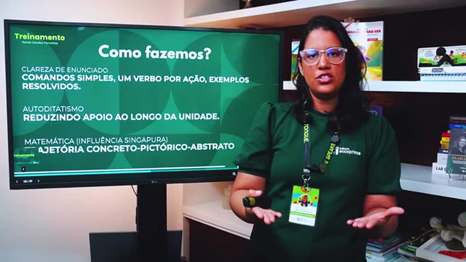

A estrutura pedagógica do material
Ana Carolina, coordenadora pedagógica, apresenta o material por dentro: os pilares, a metodologia, a avaliação integrada e como a cosmovisão cristã orienta cada conteúdo.
Ver a apresentaçãoAula experimental: cosmovisão na sala de aula
Em 19 minutos, Jaidson Araújo mostra como o que cremos sobre Deus, o ser humano e o conhecimento chega ao planejamento, à correção e à forma de ensinar.
Assistir à aula gratuita